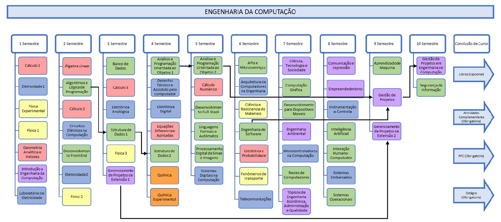

Descrição do curso
O Bacharel em Engenharia de Computação é um profissional apto a produzir e aplicar conhecimentos científicos e tecnológicos para o desenvolvimento de sistemas computacionais que unem equipamentos eletrônicos e software. Possui uma sólida base em computação, desenvolvimento de software e hardware, matemática e eletrônica visando:
- Analisar e avaliar arquiteturas e plataformas computacionais, assim como desenvolver e otimizar software para elas;
- Desenvolvimento e integração de sistemas robóticos e outros sistemas embarcados autônomos;
- Analisar, avaliar, selecionar e configurar plataformas de hardware para o desenvolvimento e implantação de aplicações de software e/ou serviços;
- Projetar, implantar, administrar e gerenciar infraestruturas computacionais;
- Implementar e gerenciar a segurança de sistemas de computação;
- Coordenar e integrar profissionais e equipes de diferentes áreas, atendendo as novas relações de trabalho, proporcionadas pela era da informação.
Por fim, o Bacharel em Engenharia de Computação pode requerer seu registro profissional nos Conselhos Regionais de Engenharia e Agronomia – CREA.
Grade curricular do curso
